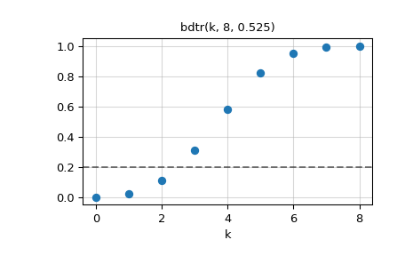

scipy.special.bdtrik#
- scipy.special.bdtrik(y, n, p, out=None) = <ufunc 'bdtrik'>#
Binomial distribution quantile.
Finds the number of successes k such that the sum of the terms 0 through k of the Binomial probability density for n events with probability p is equal to the given cumulative probability y.
- Parameters:
- yarray_like
Cumulative probability (probability of k or fewer successes in n events).
- narray_like
Number of events (float).
- parray_like
Success probability (float).
- outndarray, optional
Optional output array for the function values
- Returns:
- kscalar or ndarray
The number of successes k such that bdtr(k, n, p) = y.
See also
bdtrBinomial distribution cumulative distribution function
Notes
Formula 26.5.24 of [1] is used to reduce the binomial distribution to the cumulative incomplete beta distribution.
This function uses routines from the Boost.Math C++ library [3] which rely on numerical inversion of the binomial distribution CDF [4].
References
[1]Milton Abramowitz and Irene A. Stegun, eds. Handbook of Mathematical Functions with Formulas, Graphs, and Mathematical Tables. New York: Dover, 1972.
[2]NIST Digital Library of Mathematical Functions https://dlmf.nist.gov/8.17.5#E5
[3]The Boost Developers. “Boost C++ Libraries”. https://www.boost.org/.
Examples
We have a coin for which the probability of showing heads when flipped is 0.525. The coin is flipped 8 times. Find the largest value of k such that the probability that X <= k is not greater than 0.2, where X is the number of heads.
In fact, there is no integer value of k that will give a probability of exactly 0.2, as this plot of the cumulative distribution function shows.
>>> import numpy as np >>> import matplotlib.pyplot as plt >>> from scipy.special import bdtr, bdtrik
>>> n = 8 >>> p = 0.525 >>> k = np.arange(0, n + 1) >>> plt.plot(k, bdtr(k, n, p), 'o') >>> plt.grid(True, alpha=0.5) >>> plt.xlabel('k') >>> plt.axhline(0.2, linestyle='--', color='k', alpha=0.5) >>> plt.title(f"bdtr(k, {n}, {p})") >>> plt.show()

From the graph we can see that we would choose k = 2. The function
bdtriklets us find this value directly.bdtrikreturns a floating point value that is like a continuous extension of k. This computes k as a noninteger floating point value:>>> bdtrik(0.2, n, p) np.float64(2.508332751475262)
For our final answer we need an integer k, and since we want to ensure that the probability at k does not exceed 0.2, we truncate the fractional part of this value with
np.floor:>>> np.floor(bdtrik(0.2, n, p)) np.float64(2.0)